The food in the fridge,
used first.
A list of the food in the fridge, the freezer, and the pantry on one phone. A person scans a barcode or types a name, and the app shows what to use first and sends a reminder before food expires. The Android app has milestones 0 to 5. The iOS app has milestones 0 and 1. A milestone is complete only when both apps have it.
spec/ at 483284c, 17 November 2026. The Android core passes them. The iOS core on main is at the 243 cases of c4e1d3f2a1712c: unit tests, lint, builds, and 35 device testsRun 44198869697, API 35 emulator. The run on ba6f9ab failed on one device testMilestones
From section 6 of the plan. Each milestone has one parent issue in this repository and one sub-issue in each app repository.
| # | Milestone | Android | iOS | Issues |
|---|---|---|---|---|
| 0 | Scaffold | Done 10 Nov | Done 10 Nov | None |
| 1 | Core rules | Done 10 Nov | Done 10 Nov | Closed in the three repositories |
| 2 | Inventory on one phone | Done 12 Nov | Not started | None |
| 3 | Add with a barcode | Done 12 Nov | Not started | None |
| 4 | Reminders | Done 12 Nov | Not started | None |
| 5 | History | Done 12 Nov | Not started | None |
| 6 | Release preparation | Not started | Not started | None |
The iOS app cannot start milestones 3 to 5 yet. Their rules are in the Android
app module only, not in spec/. Section 6.1 of the plan lists them. Move them into
spec/ first.
Opened food, "Still good?" with limits, tips, and the date scanner · Android and the shared rules, 17 November 2026
The owner asked for expiry dates that are as accurate as possible, with an app that is careful. The research on expiry dates compares the sources and the official advice of Canada, the European Union, the United Kingdom, and the United States. From it, the shared rules got four parts. A batch has an opened date, and the app uses the good-until date: the earlier of the expiry date and the opened date plus the opened days of the food (ADR 0013). A printed date has a date type, each food has an after-date class, and "Still good?" shows only when the rule permits it (ADR 0014). An expiring batch shows before-date tips with the words of a named source (ADR 0015). A batch has a frozen date and a thawed date: a thawed batch is good for 1 day, a frozen batch has the time of its food in the freezer, and a batch goes into a freezer only up to its date (ADR 0016). The Android app has the screens for the four parts, with "Move to freezer", "Move to fridge", and "Change date" on a batch. It also has "Scan date", which reads the printed date with text recognition on the phone, and it reads the printed date of a GS1 2D barcode. On 18 November 2026 the owner saw the buttons for frozen food on the emulator and agreed the decisions of ADR 0016. The owner did not review ADR 0013 to ADR 0015 and the text of their screens yet.

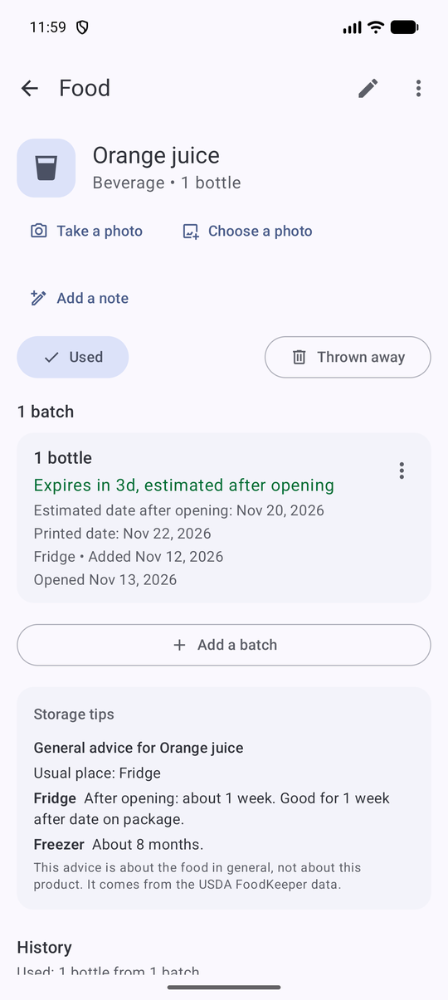

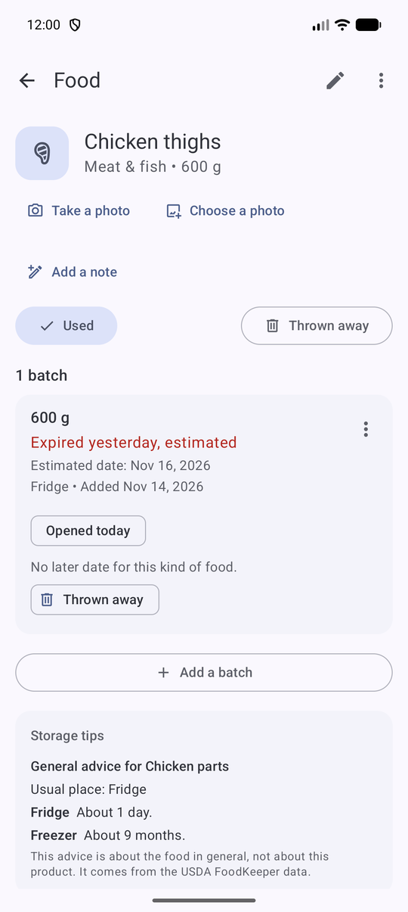

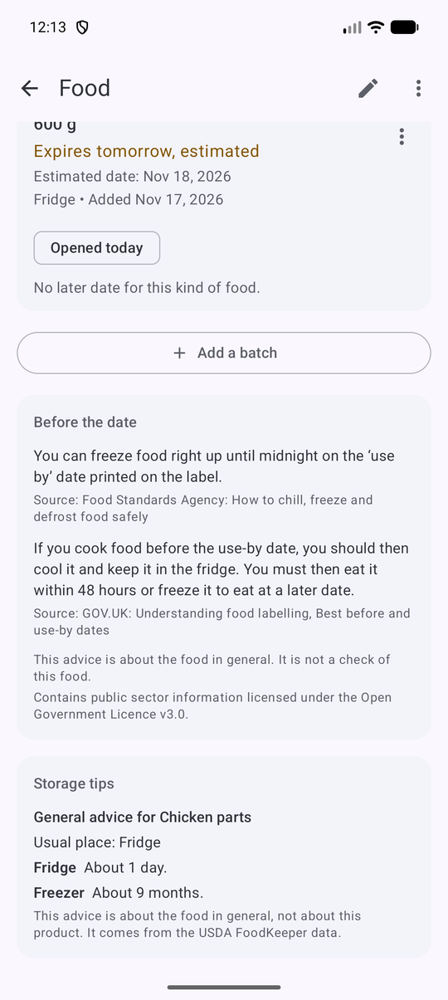

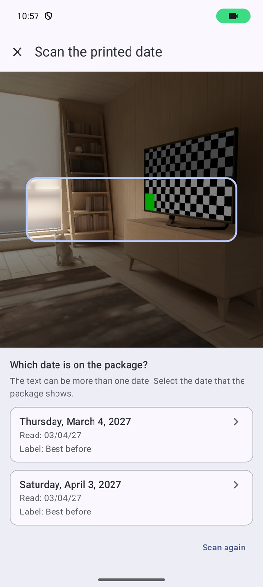

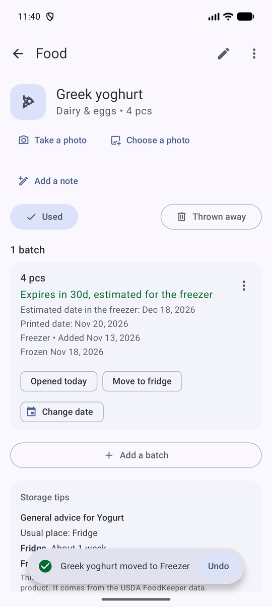

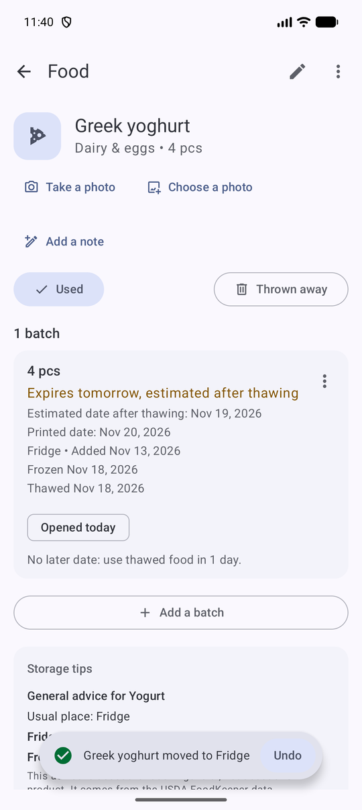

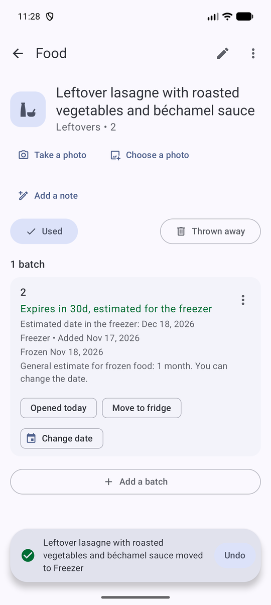
Verification
spec/tools/vectors.py: 354 cases, 0 failures, at483284c. The Spec workflow passed on7af5ed4, which had 348 cases.- Android, local, on the tree of
ba6f9ab: 37 core tests, 228 unit tests of the app, lint with no issues, the debug and release builds, and 35 of 35 device tests at the normal size. At 640 × 1280 and density 320: 34 of 35. - Android CI on
ba6f9ab: Run 44196009665 failed. The build job passed. In the device job,aSwipeRecordsTheOldestBatchAsUsedAndUndoBringsItBackfailed: after the swipe, the card of the milk has a later date and goes down in the list, below the visible part of a small screen, and the test did not scroll to it. This was also the cause of the failure of this test on this computer. - Android CI on
2a1712c, which corrects the test: Run 44198869697 passed, with the builds, lint, the unit tests, and 35 device tests on the API 35 emulator. spec/tools/vectors.py: 426 cases, 0 failures, atad69908, with the rules of ADR 0016. The Spec workflow passed on that commit: Run 44371874074.- Android, local, on the tree of
55b8f9a: 39 core tests, 239 unit tests of the app, lint with no issues, the debug and release builds, and 39 of 39 device tests at the normal size, 4 of them new for frozen food. Onb1c79c2, at 640 × 1280 and density 320: 38 of 39 in the full run.withNoConnectionTheScannerSaysSoAndKeepsTheBarcodeForEnterByHandfailed one time and passed in the next run. - Android CI on
55b8f9a: Run 44372172790 failed. The build job passed. In the device job, two new tests ofFrozenFoodDeviceTestfailed: on the small screen, the message "moved to Freezer" was above the next button, and the touch of the test did not get to it. The app had no defect. - Android CI on
b1c79c2, which corrects the two tests: Run 44376216471 passed, with the builds, lint, the unit tests, and 39 device tests on the API 35 emulator. - The debug build of
55b8f9a, which has the same app code asb1c79c2, was installed on the Pixel 7 Pro of the owner on 18 November 2026. It was not used on the phone in this work.
Known limits
- The date scanner was not tested with a real package, and the GS1 reader was not tested with a real 2D barcode. The device tests give fixed text and fixed barcode values in the place of the camera.
- The text model in the app adds about 12.8 MB to a download for arm64. The universal APK went from 27.2 MB to 70.0 MB.
- iOS: the app does not have the rules of ADR 0013 to ADR 0016. A core for them is in the working tree of one computer only. It is not committed, and no Swift compiler has built it. On 18 November 2026 the owner said to leave the iOS app for now.
- Frozen food: a frozen batch of a food with no time in the freezer in the table gets a general 30 days, also a food that does not freeze well. After "Change date", the card does not say when the batch was frozen. A batch that the person adds to a freezer with a printed date expires on that date.
- The new buttons were not checked in dark mode and with large text.
- The after-date classes are a selection by hand from the names of the foods: 262 strict and 399 check. No person who knows food safety checked them.
- The table has 4 before-date tips for 19 foods. Two tips say "use-by date" also for a batch with a different date type.
- A storage tip of the FoodKeeper data for orange juice says "Good for 1 week after date on package." The card shows it as it is (ADR 0012). This does not agree with the careful rule of ADR 0014.
- Some device tests failed one time in a local run and passed in the next run, with an activity that did not close or with a timeout. The cause is not known.
Storage tips, one item left, search, and Recent · Android and the shared rules, 14 November 2026
A scanned product gets a storage hint from the text on its package and its category tags, and the add form selects an area of that storage kind (ADR 0011). The product keeps the text of its package, and the screen of a food shows storage tips: that text with a check mark, and the general advice of the FoodKeeper data (ADR 0012). On Android, with only one item left, "Used" and "Thrown away" record it with no dialog for a quantity. In the suggestions of the add form, a name that starts with the text comes before an alias, and a suggestion that agrees only by an alias shows that alias. Recent shows the foods that were added, used, or thrown away last, also the foods in the inventory, and a button with a cross removes a food from the list until its next add, use, or throw away.

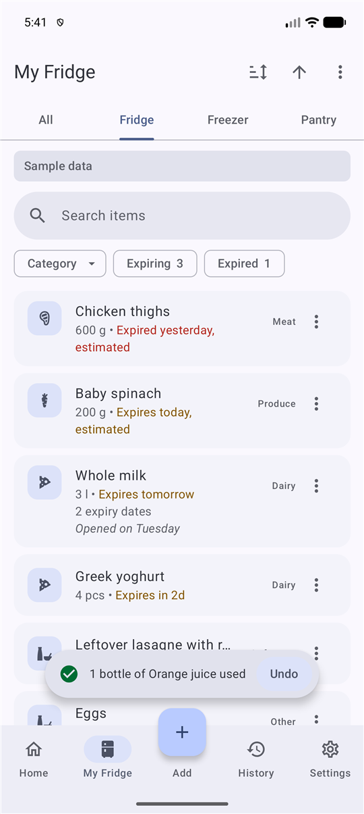

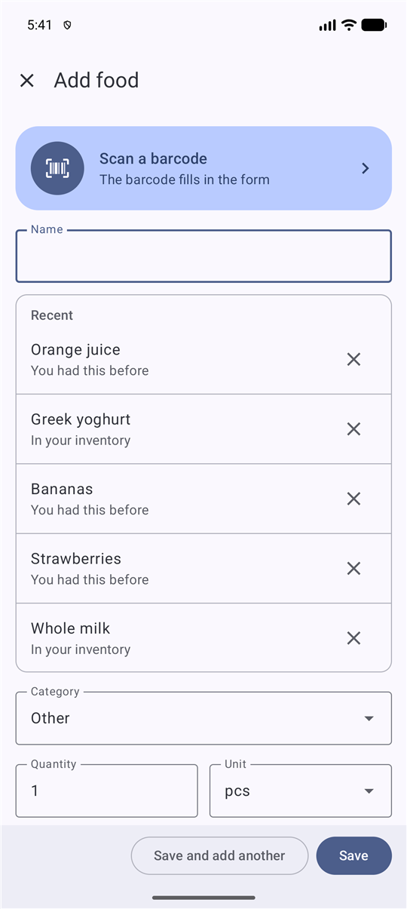

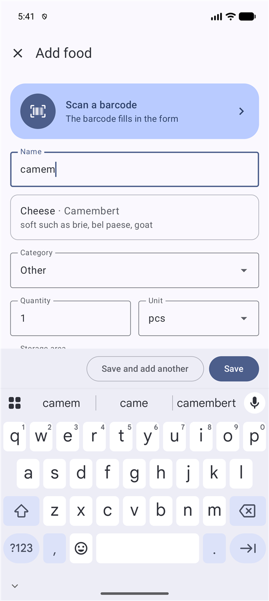
Verification
spec/tools/vectors.py: 243 cases, 0 failures.- Android, local: lint, all unit tests, and 24 of 27 device tests at 640 × 1280 and density 320.
aSwipeRecordsTheOldestBatchAsUsedAndUndoBringsItBackfails only on this computer. Two other tests failed while the system of the emulator restarted; they passed after a reboot. - Android CI on
8ad4020: Run 43658834316 passed on its second attempt, with 197 unit tests, lint, the builds, and 27 device tests on the API 35 emulator. On the first attempt,aFrozenProductGetsTheFreezerFromItsStorageHintAndKeepsItsStorageTextwaited 10 s for Home after "Save" and failed. The same test passed on this computer and on the second attempt. - iOS CI on
6c01512: Run 43658843544 passed, with 24 core tests and the app build. - Installed on the Pixel 7 Pro of the owner.
Known limits
- iOS has only the core part of the storage hint. It has no add form, so none of the screen changes.
- The list of foods that the person removed from Recent is on the phone only. It is not in the change log.
- The device test of the frozen pizza failed one time in CI with no clear cause. Watch it in the next runs.
Still good? A later expiry date · Android and the shared rules, 13 November 2026
A batch that is expiring or expired has "+1 day", "+1 week", and "Other date" on the
screen of the food. The new date is a third source of an expiry date, chosen, and the screen shows
it as "Your date" (ADR 0009).
spec/ has the rule and two new vector cases. Both core modules have the new source.
Not committed yet. The copies of spec/ in the apps are equal to this repository,
but spec.ref moves only after a commit here.

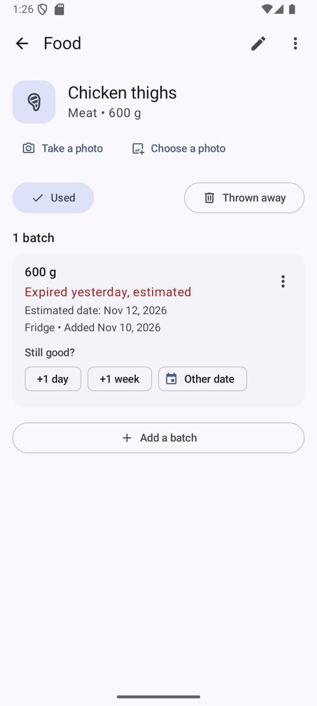

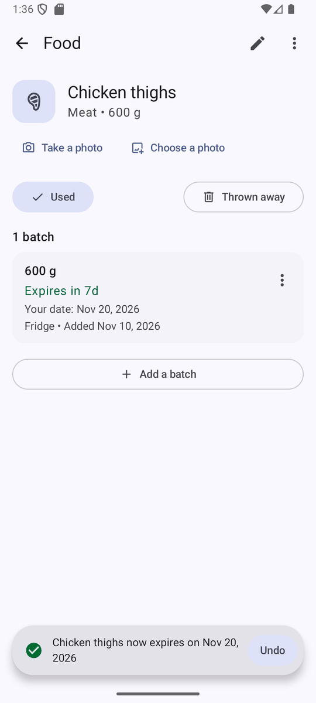
Verification
spec/tools/vectors.py: 167 cases, 0 failures.- Android: 161 unit tests with the vectors, lint with no issues, and the 6 device tests of the changes to the inventory, with the new test of "+1 day", "Your date", and "Undo".
- iOS: the new source is in
CVKEFridgeCore. Not built: iOS builds only in CI after a push.
Known limits
- Not checked on a phone yet.
- The iOS app has no screen of a food yet, so it has no buttons.
Settings tab, camera photos, and My Fridge from the bar · Android, 13 November 2026
Four changes that the owner asked for after use on the phone
(ADR 0008). Settings is the fifth place of
the navigation bar, with a switch for the wallpaper colours. A tap on My Fridge in the bar shows the Fridge with
no filter. A product photo comes from the camera app or from the photos of the phone, on the screen of a food
and in the add form. Not committed yet. The work is on top of dce5b94 and of the
uncommitted Add button and floating messages.

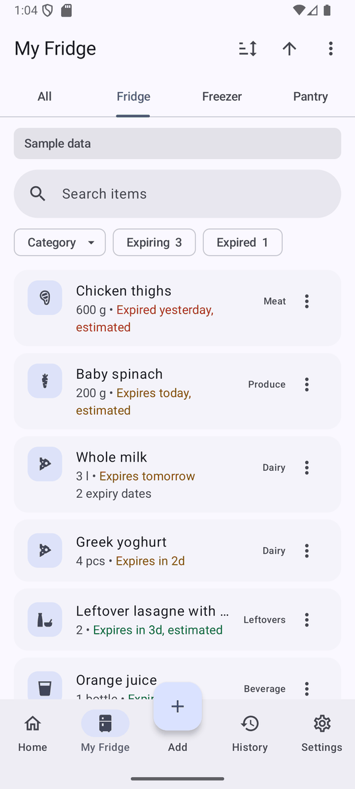

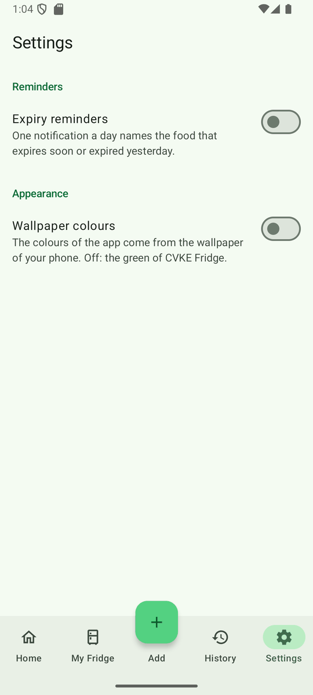

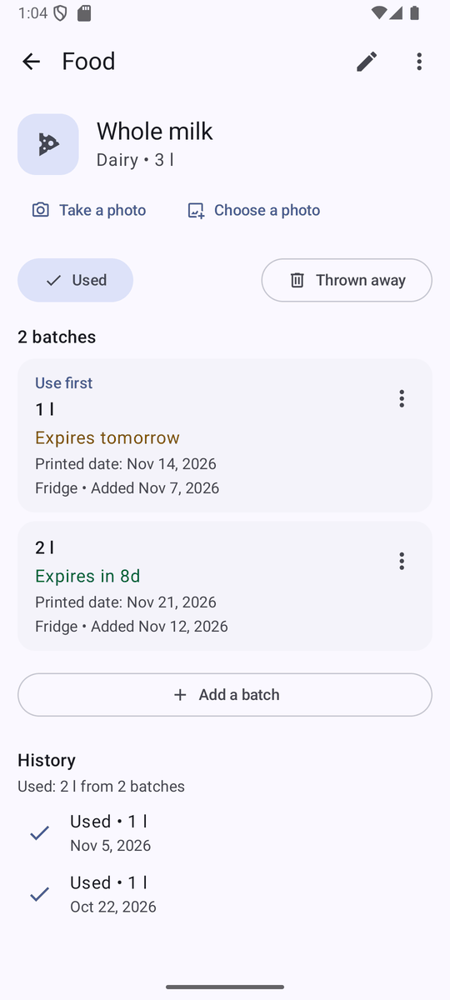

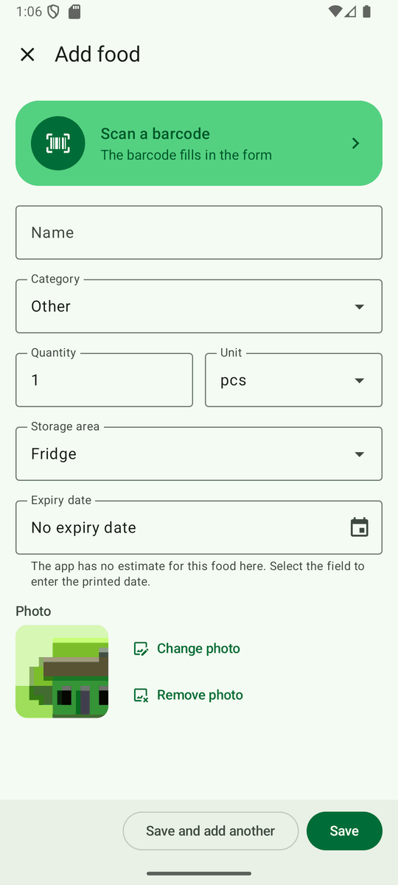
Verification
- On the emulator: the camera explanation, the question of Android, the camera app of the emulator, the photo in the add form, and the saved food with the photo. The picture of the camera app was gone after the app made the photo.
- Unit tests and lint: passed.
- Device tests: 23 of 23 passed on the emulator (API 36), with the new tests for the bar, the setting, the camera, and the add form. One new test first failed on its own wait for a file and was corrected. Not yet run at the small screen of CI.
Known limits
- Not checked on a phone yet. The camera app of each phone maker is different.
- The photo is still not in the change log or in
spec/. - The iOS app has none of this yet.
Wallpaper colours on Android · 12 November 2026
On Android 12 and later, the colour scheme comes from the wallpaper of the phone. Fresh,
expiring, and expired keep their colours, and the brand gradient does not change. Android 10 and 11 keep the
scheme from the green of FridgeFriend. The iOS app keeps the green.
ADR 0007. Android commit
dce5b94.

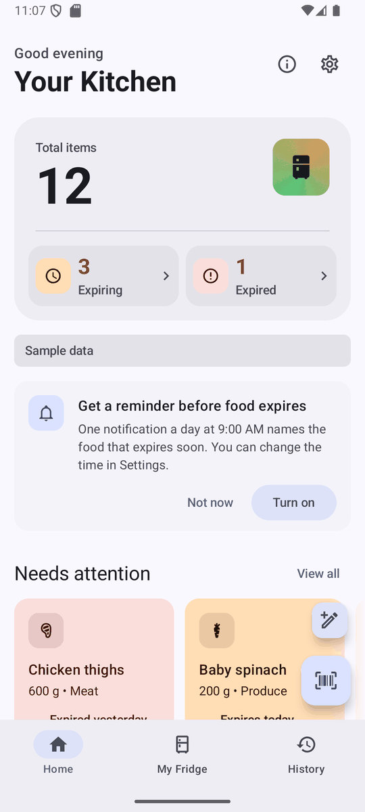
dce5b94 · sample data
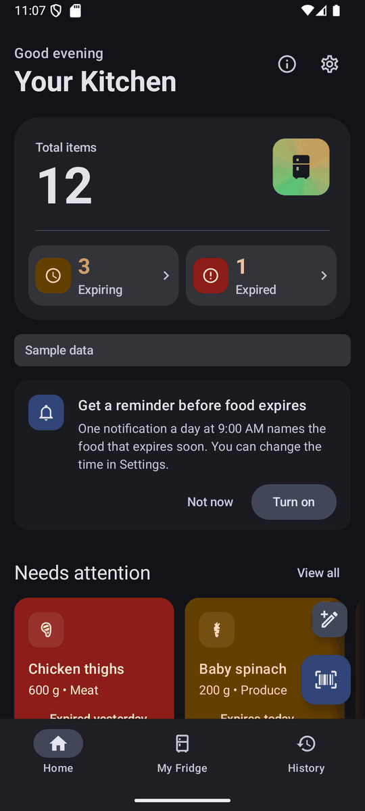
dce5b94 · sample dataThe screenshots of milestones 2 to 5 below are from before this change. They show the green scheme.
Milestone 5: History · Android, 12 November 2026
History is the third tab. It shows what was used and what was thrown away, with a summary
for this month, the last month, or all time. "Add again" adds a food from a history entry, from the screen of a
food, or from the recent foods in the add form. A product can have a photo from the photo picker. Android commits
a516a1f to 8529628.

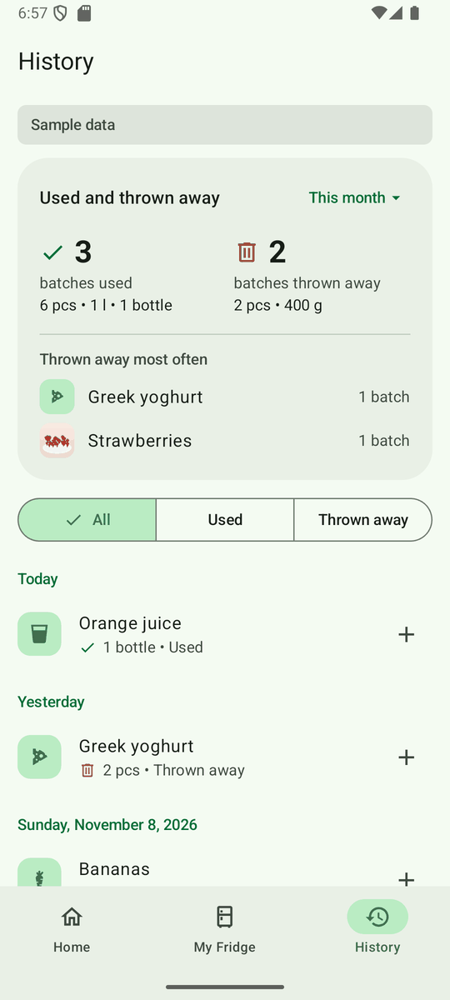
2b68d37 · sample data
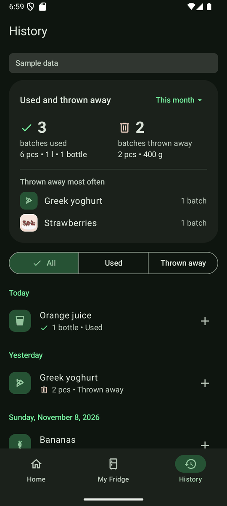
2b68d37 · sample data
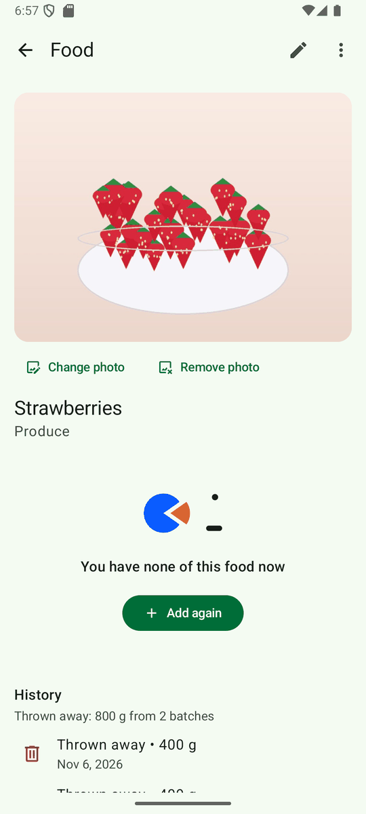

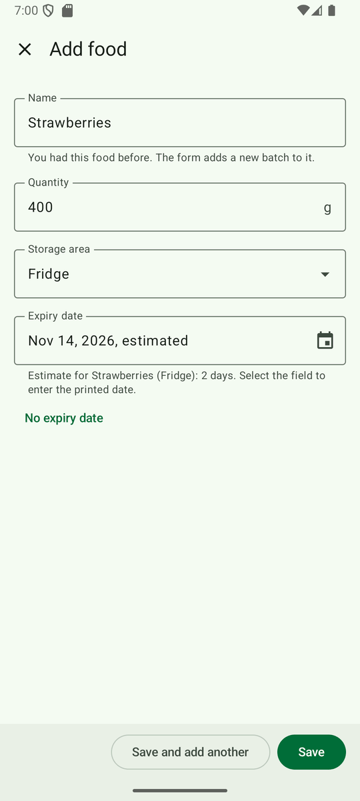
Verification
- Unit tests:
HistoryContentTest,AddAgainTest,PhotoFilesTest,PhotoStoreTest. - Device test
HistoryDeviceTest: used and thrown away appear in History, the filter, add again with the new batch in the change log, and a photo through a restart, remove, and undo. - Checked with large text (1.5) and in landscape. A change log of 3000 ended batches opened at once on the emulator.
Known limits
- The history rules and the photo are not in
spec/. - The
Productof the core has no photo, and a photo is not in the change log. - The speed check used a debug build on an emulator. It does not show the frame times of a phone.
Milestone 4: Reminders · Android, 12 November 2026
Not more than one notification a day, at a time that the person sets. It names the food
that expires within the lead time or expired yesterday. Home offers reminders one time, and a dialog explains
them before Android asks. Settings has the switch, the time, the lead time, and the next reminder. Android commits
c205be0 to e9ce076.

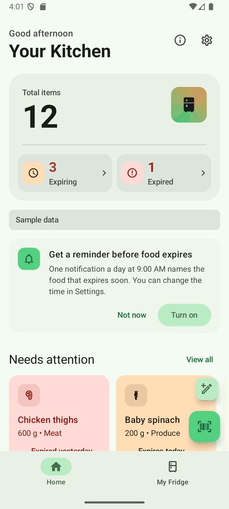
ca3d7da · sample data
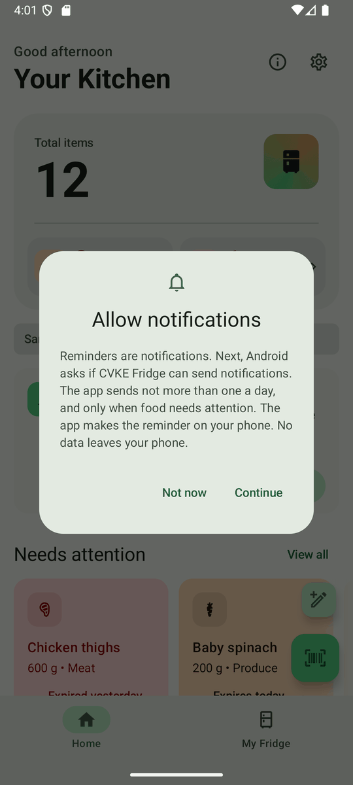

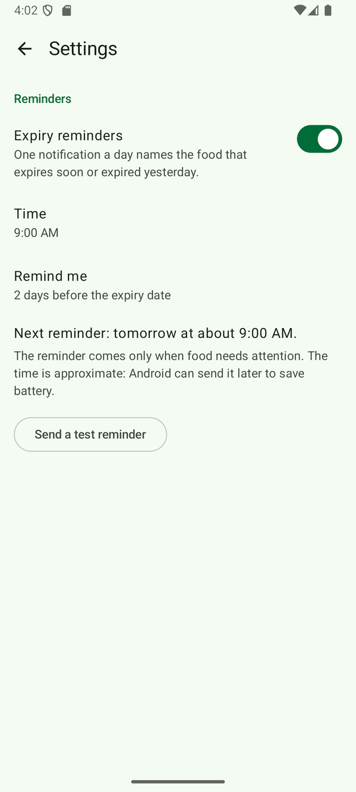

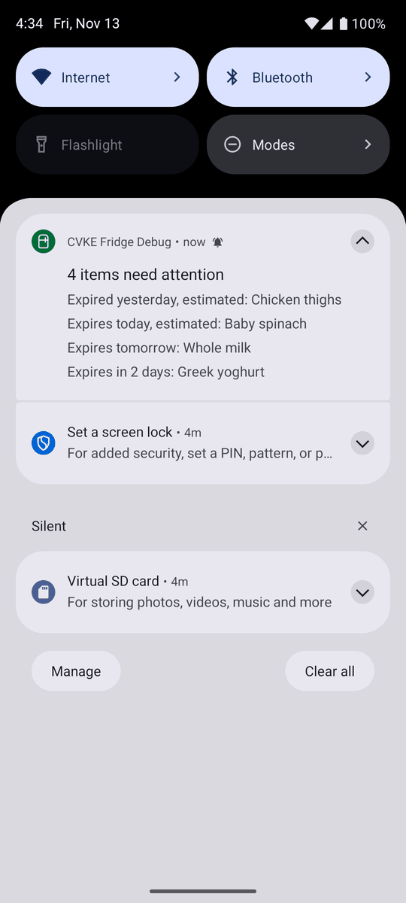
7eccc0c · sample dataVerification
- Unit tests:
ReminderRulesTest,ReminderTextTest,ReminderScheduleTest(midnight, daylight saving time, and time zone changes),ReminderSettingsTest,NotificationAccessTest. - Device test
ReminderDeviceTest: the offer, the explanation, the Android question, the settings, the alarm work with the real change log, and a tap on the notification. - The CI run of
e9ce076had a failed device test.8d7558athen changed a device test for the small screen of CI, and the next runs passed.
Known limits
- The time is approximate: an inexact alarm can come up to one hour late on Android 12 and later, and later in Doze.
- The notification has no actions. Used and thrown away need a quantity and an undo.
- The reminder rules are not in
spec/.
Milestone 3: Add with a barcode · Android, 12 November 2026
A camera scanner with the ML Kit model in the app, the product lookup with Open Food Facts
and a cache on the phone, and the add form with the values of the lookup. The screen explains the camera before
Android asks, and "Type the barcode" and "Add by hand" are always there. Only the barcode number leaves the
phone. Android commits ca2a97b to 537e023.

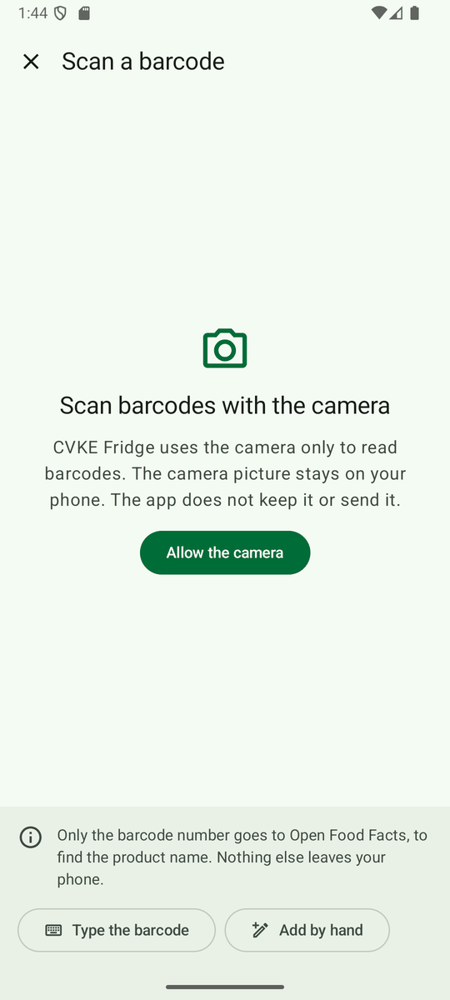
1a9e7c8
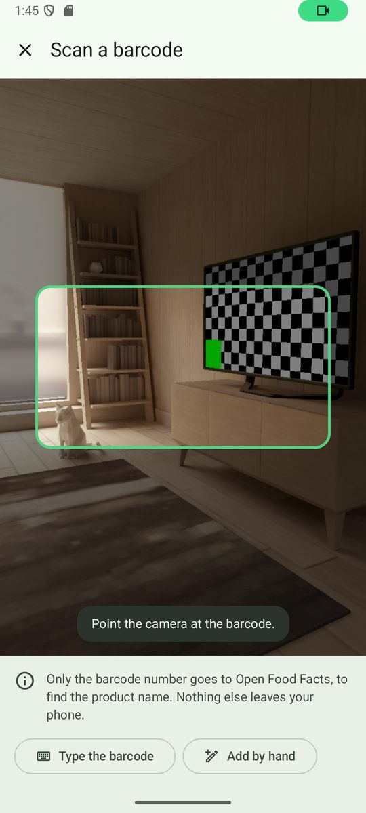

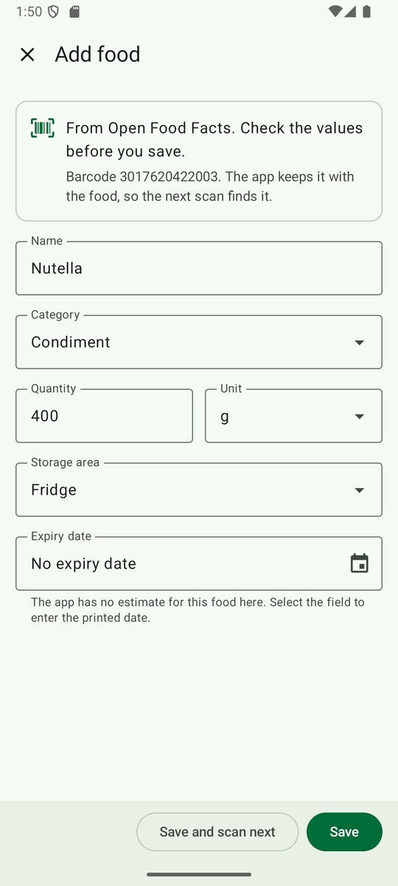

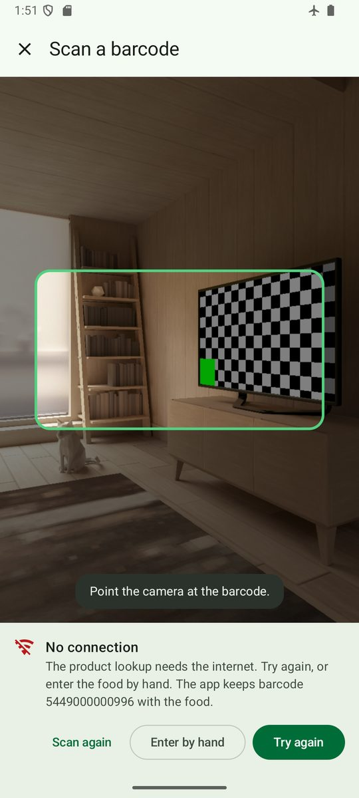
Verification
- Unit tests:
BarcodesTest,OpenFoodFactsTest(with recorded answers of the API),ProductMappingTest,ProductLookupTest,ScanDebouncerTest. - Device test
BarcodeDeviceTest: a typed barcode to a saved food, "not found", and "no connection", with a fake server in place of the internet. - Device test
BarcodeReaderDeviceTest: the ML Kit model of the app reads drawn barcodes. - Checked in dark appearance, with large text (1.5), and in landscape.
Known limits
- The barcode and lookup rules are not in
spec/. - The ML Kit model adds about 1 MB and a native library of 3 to 6 MB for each ABI.
- This report has no screenshot of a scan of a real package with a phone camera.
Milestone 2: Inventory on one phone · Android, 12 November 2026
The change log on the phone, Home and My Fridge with the contents of FridgeFriend
(ADR 0006), the add form,
the screen of a food with its edit forms, used and thrown away with undo, and the storage areas. Android commits
a9fc729 to 3ca5a46.

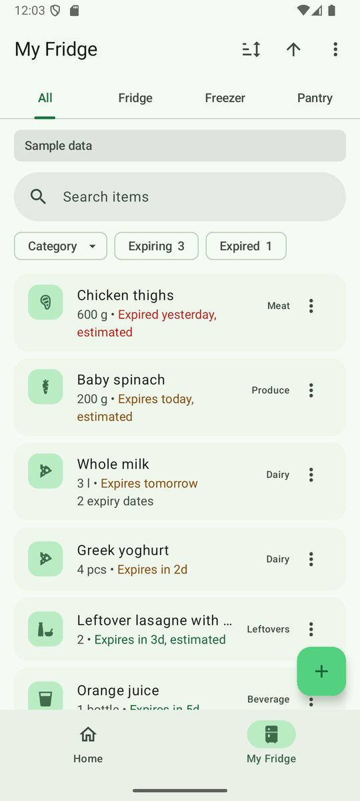
83cf933 · sample data
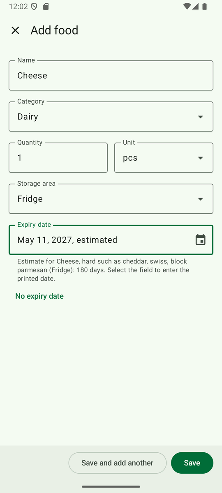

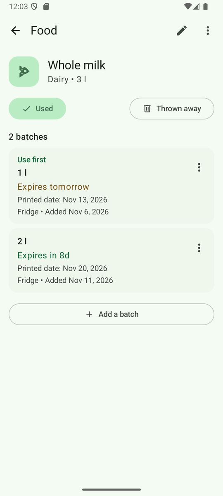

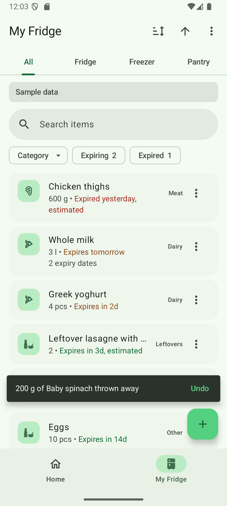
Verification
- Unit tests:
InventoryContentTest,AddFoodFormTest,EditFormsTest,InventoryActionsTest,NewChangesTest. - Device tests
InventoryScreensDeviceTestandInventoryChangesDeviceTest: the screens with and with no food, add by hand, a swipe to used with undo, thrown away, edit a batch, and a new storage area, checked against the replay of the change log. - Checked with large text (1.5) and in landscape.
Known limits
- The sample data is in the debug build only, and the screen labels it.
- A delete is only in a menu, because it is for a mistake. Used and thrown away are the two ends of a batch.
Milestones 0 and 1: Scaffold and core rules · Both apps, 10 November 2026
Scaffold
Three repositories, a start screen in each app, and green CI in each repository.
Core rules
Products and batches, calendar dates, days left, freshness, the expiry estimate from the table of foods, the
use-first order, and the change log, in :core and CVKEFridgeCore. Both modules pass
the 165 vector cases at commit e1e8363 of spec/. Issue 1 is closed in the three
repositories.
Work not done
Required
- Move the rules of milestones 3 to 5 into
spec/and both core modules (plan, section 6.1). - Build milestones 2 to 5 in the iOS app.
- Make the parent issues and the sub-issues of milestones 2 to 5.
- Milestone 6: screen readers, rotation, store listings, privacy details, and signing.
- Build the rules of ADR 0013 to ADR 0016 in the iOS core, from
spec/and from the Android commits, and make its CI run green. - Test the date scanner with real packages, and the GS1 reader with a real 2D barcode.
- A check of the after-date classes by a person who knows food safety, before a release.
Open decisions and work in progress
- Open decisions 1 to 3 of the plan: the store name, the product identity, and the glossary words.
- Open decisions 6 to 13 of the plan, from the expiry research: a later date for an opened batch, the after-date classes, the class of eggs and of a product with no food, the default freezer days (30 now), and the sources and the words of the tips. Decisions 4 and 5, for frozen and thawed food, are agreed.
- The owner reviews ADR 0013 to ADR 0015 and the text of their Android screens.
- If the text model stays in the app (about 12.8 MB more for arm64), or the app downloads it after the install.
Change history
The newest entry is first. Keep the earlier entries.
- Frozen and thawed food (ADR 0016). The owner selected option A, with 1 day for thawed food, and no move to a freezer after the date.
spec/at cvkefridgead69908has the frozen date and the thawed date of a batch, the changesbatchFrozenandbatchThawed, the new steps of the good-until date, the 30 default freezer days, and the freeze check (rule 11): 426 vector cases. Android55b8f9ahas these rules in the core, "Move to freezer" and "Move to fridge" on a batch, "Change date" for a batch in a freezer, and the same moves in the edit form, with 4 new device tests and three screenshots. Androidb1c79c2corrects two of these tests for the small screen of CI. The debug build is on the Pixel 7 Pro of the owner. The owner said to leave the iOS app for now, so this feature is not complete in the sense of this report. - The research on expiry dates (
docs/research/expiry-dates.md), and from it the shared rules for opened food (ADR 0013), the later-date offer (ADR 0014), and the before-date tips (ADR 0015): cvkefridge7af5ed4, 348 vector cases. Frozen and thawed food is a proposal (ADR 0016).spec/is now at483284c, with the five new categories (ADR 0017) and the lookup pause (ADR 0018): 354 cases. Androidba6f9abhas these rules in the core, the screens for opened food, the date type, "Still good?" with limits, and the tips, the date scanner, and the printed date of a GS1 2D barcode. Its CI run failed on one device test that did not scroll to a card on a small screen.2a1712ccorrects the test, and its CI run is green with 35 device tests. iOS is at6c01512: its core for the new rules is written and not committed, and no compiler has built it. The date scanner and the GS1 reader were not tested with a real package. - Committed and pushed: the storage hint of a scanned product (ADR 0011) and the storage tips (ADR 0012), with rule 8 and
spec/storage-hints.jsonin the shared rules (243 vector cases). On Android, also: with one item left, "Used" and "Thrown away" need no dialog; a name match comes before an alias match in the suggestions, which show the alias; Recent shows the foods that were added, used, or thrown away last, with a button that removes one.spec/is atc4e1d3fin both apps. Android is at8ad4020and iOS at6c01512. Both CI runs are green; Android needed a second attempt because one device test timed out. Installed on the phone of the owner. - A note on a food (ADR 0010). A product has one optional note, in the
productSavedchange of the shared rules, with 2 new vector cases. Both core modules read a change with nonotekey. On Android, the screen of the food shows the note and edits it in place, the add form and the edit form have a note field, the card on My Fridge shows its first line, and the search finds it. Committed and pushed: spec/ is atd37c5d7in both apps. Android is at25bcae3and iOS at5d9714c, and the CI runs of both are green. The first CI run of Android found that the keyboard covered the buttons of the note editor on a small screen;25bcae3corrects it. iOS has only the core part of the note. - Better suggestions in the add form (cvkefridge
99ece94, Androidba3604c, iOS3245885).spec/foods.jsonmarks 142 common foods and has 285 aliases (other names such as yoghurt, mince, courgette, and prawns) from the new filespec/tools/food-extras.json. Both core modules read them. On Android, the suggestions show the foods of the person and the common foods first, show not more than 2 foods with the same name, and find a name with one wrong letter. iOS CI has not run on this change. - Committed and pushed the work of 13 November: Settings in the bar, the later expiry date, photos from the camera, and the usual storage kind.
spec/is atb16177bin both apps. Android CI is green on98b73e6with 25 device tests, after a fix that scrolls the suggestions of the add form into view on a small screen. iOS CI is green on34aba67: 17 core tests. - Each food of the table of foods has a usual storage kind (
usualKindinspec/foods.json), and both core modules read it. On Android, a food in the add form selects an area of that kind, unless the person selected an area. - Not committed: a later expiry date for food that is still good, with the new source
chosenin the shared rules and in both core modules (ADR 0009). - Android, not committed: Settings in the navigation bar with a switch for the wallpaper colours, My Fridge from the bar shows the Fridge with no filter, and photos from the camera and in the add form (ADR 0008).
- Start of this report. The plan records milestones 2 to 5 as done on Android and not started on iOS, and lists the rules that are only in the Android app.
- Android: the wallpaper colours (ADR 0007), milestone 5, milestone 4, milestone 3, and milestone 2. The competitor research on food inventory apps. Home first and all food on My Fridge (ADR 0006).
- Milestone 1 in both apps: 165 vector cases at one commit of
spec/. Milestone 0: three repositories, start screens, and CI.